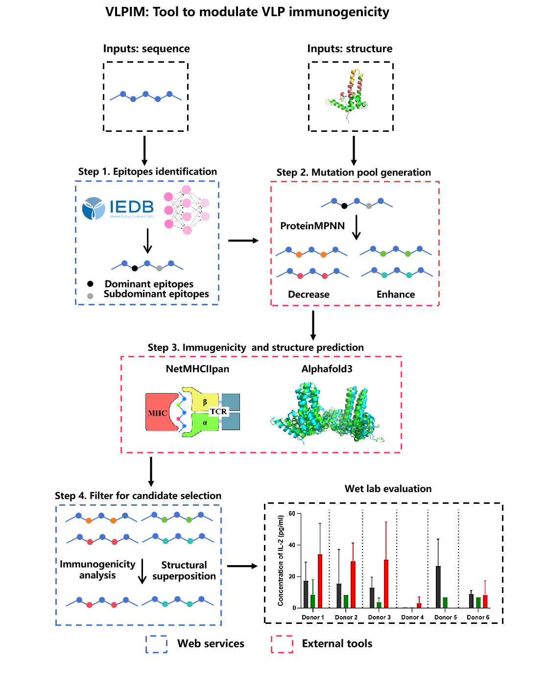

VLPIM is a comprehensive computational workflow for modulating the immunogenicity of virus-like particles through epitope identification, MHC-II binding evaluation, and structure analysis.

Workflow figure file (static/figure1_workflow.png) is not included in this package.The following practical constraints and parameter limits apply to the VLPIM web server:
Follow the actual UI flow: load examples -> run calculations -> review outputs and export files.
This walkthrough is aligned with the current index.html UI and uses built-in sample files for a complete end-to-end run.
Open index.html, in Step 1 click Load example, then run Epitopes identification.
selected_epitopes.csv.
Go to Step 4.1, load seq-a .csv, select mode (enhance/reduce), then compute Sim score.
sim_im_reduce_combined.csv).
Go to Step 4.2, use Load example 1 or Load example 2, choose Kabsch/Iterative/TM-align, and click Calculate RMSD.